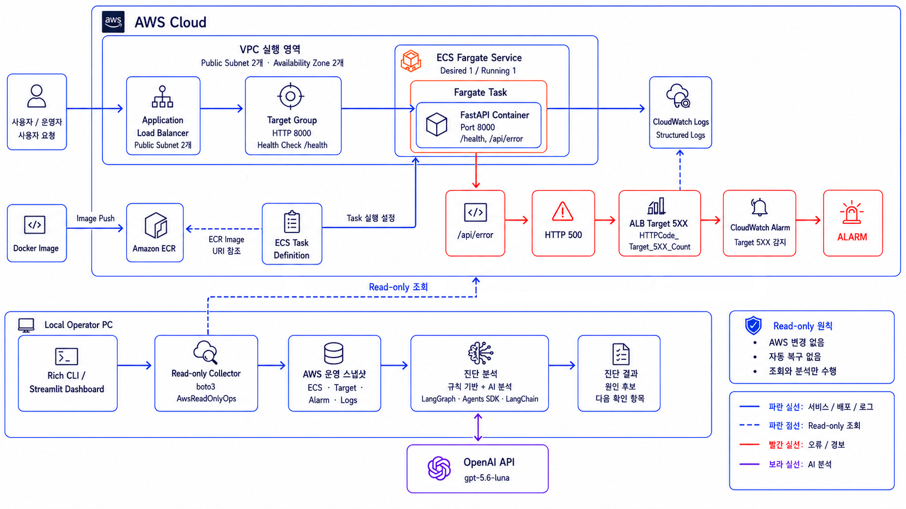

1. 프로젝트를 진행한 이유
AWS 운영 상태와 장애 로그를 여러 화면에서 따로 확인하는 과정을 하나의 조회 흐름으로 정리하기 위해 진행했습니다.
AI가 리소스를 직접 변경하지 않고, 확인된 운영 증거 안에서 원인 후보와 다음 확인 항목을 제시하도록 Read-only 범위를 유지하는 것을 목표로 했습니다.
2. 전체 아키텍처

3. 사용한 기술과 선택 이유
- boto3 — ECS, ELBv2, CloudWatch와 CloudWatch Logs의 조회 API로 운영 상태를 수집합니다.
- LangGraph — 운영 스냅샷의 AI 분석 단계를 관리합니다.
- OpenAI Agents SDK — 수집된 운영 증거를 바탕으로 장애 원인 후보와 판단 근거를 분석합니다.
- LangChain — 최종 장애 분석 결과를 보고서 형태로 정리합니다.
- Rich / Typer — 터미널에서 운영 상태와 분석 결과를 읽기 쉽게 표시합니다.
- Streamlit — AWS 상태, 오류 로그와 AI 분석 결과를 Dashboard로 제공합니다.
4. 구현 흐름
- ECS Fargate에서 장애 테스트용 FastAPI 서비스를 실행합니다.
- boto3가 ECS Service, Target Group Health, CloudWatch Alarm과 최근 ERROR 로그를 조회합니다.
- 수집한 정보를 하나의 AWS 운영 스냅샷으로 구성합니다.
- 규칙 기반 분석이 경보와 오류 로그를 연결해 1차 원인 후보를 제시합니다.
- LangGraph가 OpenAI Agents SDK와 LangChain 기반 AI 분석 흐름을 관리합니다.
- 결과를 Rich CLI와 Streamlit Dashboard에 표시합니다.
5. 테스트 결과
- ECS Service가 Active이고 Target Group이 Healthy인 상태를 확인했습니다.
- /api/error 호출 후 trace_id와 오류 메시지가 포함된 구조화된 ERROR 로그를 확인했습니다.
- ALB Target 5xx 지표가 증가하고 CloudWatch Alarm이 ALARM으로 전환되는 것을 확인했습니다.
- Rich CLI에서 AWS 상태, 규칙 기반 분석과 AI 분석 결과를 함께 확인했습니다.
- Streamlit에서 ECS, Target, Alarm, 오류 로그와 분석 결과를 한 화면에 표시했습니다.
6. 트러블슈팅
CloudWatch Alarm 상태 전환 지연
오류 요청 직후 Alarm이 OK로 표시되는 현상을 확인했습니다. CloudWatch 지표 반영과 평가 구간이 완료될 때까지 일정 간격으로 상태를 조회해 ALARM 전환을 확인했습니다.
운영 증거와 AI 분석 범위 구분
조회 결과를 먼저 운영 스냅샷으로 고정하고, 규칙 기반 분석과 AI 분석이 확인된 데이터 범위 안에서만 원인 후보와 다음 확인 항목을 제시하도록 구성했습니다.
7. 보안·비용·운영 관점에서 신경 쓴 점
- AWS 운영 데이터 수집에 조회 API만 사용하고 자동 변경과 자동 복구 기능을 포함하지 않았습니다.
- API 키와 AWS 설정값을 환경변수로 분리했습니다.
- 오류 로그와 경보 상태를 함께 제시해 분석 근거를 확인할 수 있도록 했습니다.
- 테스트 완료 후 Terraform 리소스 삭제 결과를 확인했습니다.
8. 프로젝트를 통해 배운 점
AI 운영 보조 도구는 답변 생성보다 먼저 신뢰할 수 있는 운영 증거를 일관된 형식으로 수집해야 한다는 점을 확인했습니다. 조회와 분석을 분리하고 Read-only 경계를 명확히 해야 운영자가 결과의 근거와 한계를 판단할 수 있음을 배웠습니다.
9. 향후 개선 방향
- 전용 최소 권한 Read-only IAM Role과 Policy를 구성합니다.
- AWS 계정과 리전 다중 조회 기능을 추가합니다.
- CloudWatch Logs Insights Query를 연동합니다.
- ECS Task별 로그와 배포 이력을 비교합니다.